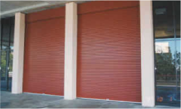

The B&D Toughpanel is suitable for heavy duty industrial and commercial
applications, such as emergency services buildings, due to its strength and the ability to
incorporate windows. Available in sizes up to 4650mm high and 5500mm wide.
Clear-A-View Glazed
Roll Up
The Clear-A-View glazed roll-up door comprises a series of glazed panels
rolling on a unique drum design, ensuring the panels provide exceptional clarity. Suitable for
shopping centre arcades, clubs, restaurants and street frontages.
Clear-A-View
Roll-A-Shutter
The Clear-A-View roller shutter provides security and natural light flow,
whilst also ensuring no lost floor space, and no vermin or dust with its pilfer proof design.
Suitable for shopping centres, clubs, video shelves, entrances and food handling areas.
With environmental concerns becoming more prominent, B&D has taken the lead
again. The B&D Envir-A-Shutter is the first fully insulated aluminium shutter. It is the perfect
choice for applications that require thermal or acoustic insulation.
Firmadoor Series 2 Light
Industrial
The Firmadoor Series 2 Light Industrial Roll-Up door is the ideal choice for
industrial and commercial applications, as it provides high standards of durability, performance
and importantly, operational ease.
Tailor-made doors with minimal limitation on the height or width of the
opening. Megadoor is designed for buildings such as aircraft hangers, mine facilities, and naval
slipways. Each Megadoor is specifically built to fit individual customer needs.
The P7™ Industrial sectional overhead door has been specifically designed for
industrial and commercial applications.
Roll-A-Door Series 1 Mini
Warehouse
B&D′s Mini-Warehouse Roll-A-Door offers the durability and security required by
storage complex owners.
Roll-A-Door Series 2
Traditional Industrial

The Roll-A-Door Series 2 Traditional Industrial door has long been the ideal
choice for industrial and commercial applications.
Roll-A-Door Series 3
Squareline Industrial
The Series 3 Squareline Industrial Roll-A-Door is a strong, reliable industrial
rolling type door.
Roll-A-Grille 19mm
Aluminium
The Roll-A-Grille is available in aluminium. It offers high security, strength,
visibility and an effective airflow of 65%.
The Roll-A-Grille Security commercial rolling grille successfully combines
medium level security with unimpeded visibility.
Highly versatile custom built industrial door with either a standard slat or
perforated slat for ventilation and light. Available in steel.
Designed to meet the demands of the high volume multi door warehouse and
factory units market. Available for a range of openings up to 5500mm wide.

Specially designed for commercial and industrial openings, complete with
strength and modern architectural styling. Available for a range of openings…

The model 8/100 deep profile Roll-A-Shutter is a steel shutter designed to
economically fulfil requirements of the popular size commercial applications.
Ideal for kiosk, shops, trucks or vans, etc. A special steel van shutter model
comes complete with centre-controlled key locking.
The Roll-A-Shutter® Mini slat shutter is designed with security in mind. It is
suited to a wide range of commercial applications including counter.
Roll-A-ShutterSeries 1 & 2
Series 1 & 2 aluminium shutters are designed specifically for providing maximum
security.
With four shutter options available, the Series 3 range is specifically
designed to span the largest of openings.
The B&D Tilting door is made up of a one piece tilting panel with Tilt-A-Door™
pivoting arm fittings at the side of the openings.